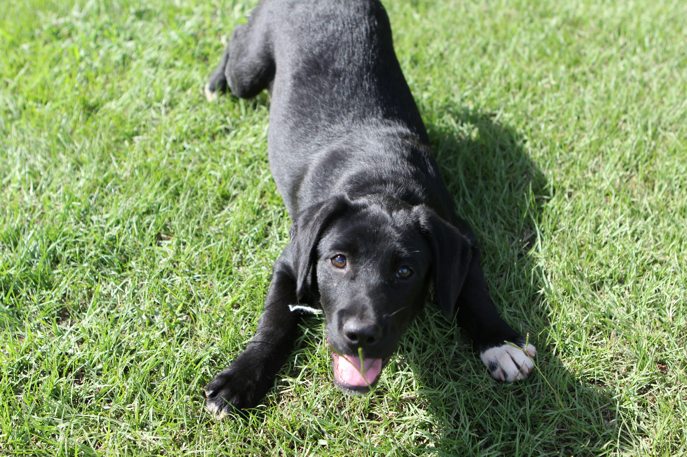

Adoption Highlight
Meet Bella
- a sweet Labrador mix looking for her forever home. She loves fetch, belly rubs, and long walks in the park. Stop by our next event to meet Bella and other wonderful dogs in need of adoption!
Adopt Today!About Us

Welcome to Dog Days Events – the hub of the canine community! We bring together dog lovers, rescue groups, and local vendors to celebrate everything pups. From adoption drives to fun festivals, we’re committed to creating a safe and joyful environment where dogs and humans can connect. Join us at our upcoming events to meet furry friends, learn more about adoption, and support your local pet community!
At Dog Days Events, we believe every dog deserves love, care, and a chance to thrive. Our mission goes beyond hosting gatherings—we aim to build lasting connections between people and pets, encourage responsible ownership, and promote health and wellness for all breeds. Whether you’re looking to adopt, volunteer, or simply enjoy a fun day out with your pup, our events offer something for everyone in the canine community.
Inspiration
Meet my baby, Luna, who inspired the creation of Dog Days Events. She showed me how much dogs thrive when they have a safe place to socialize, exercise, and be loved. This community space is dedicated to giving all dogs—big or small, shy or bold—the opportunity to live happier, healthier lives alongside their humans.